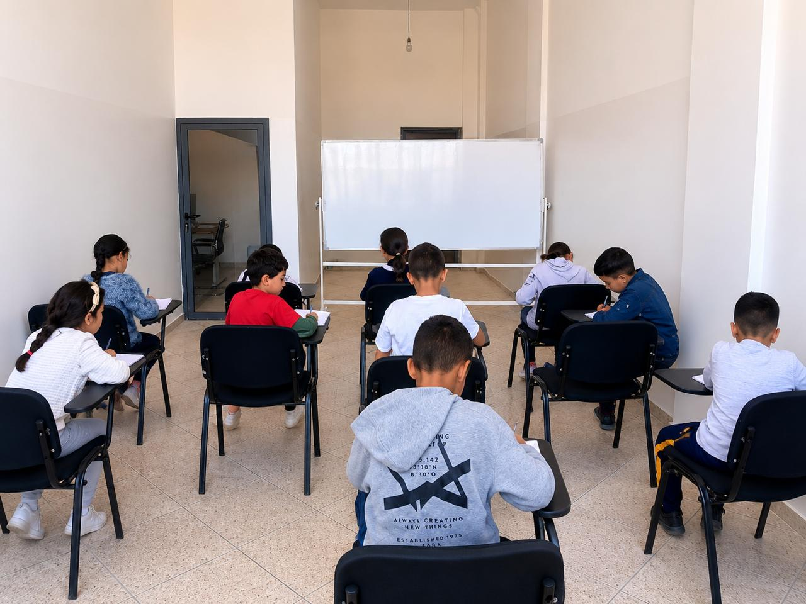
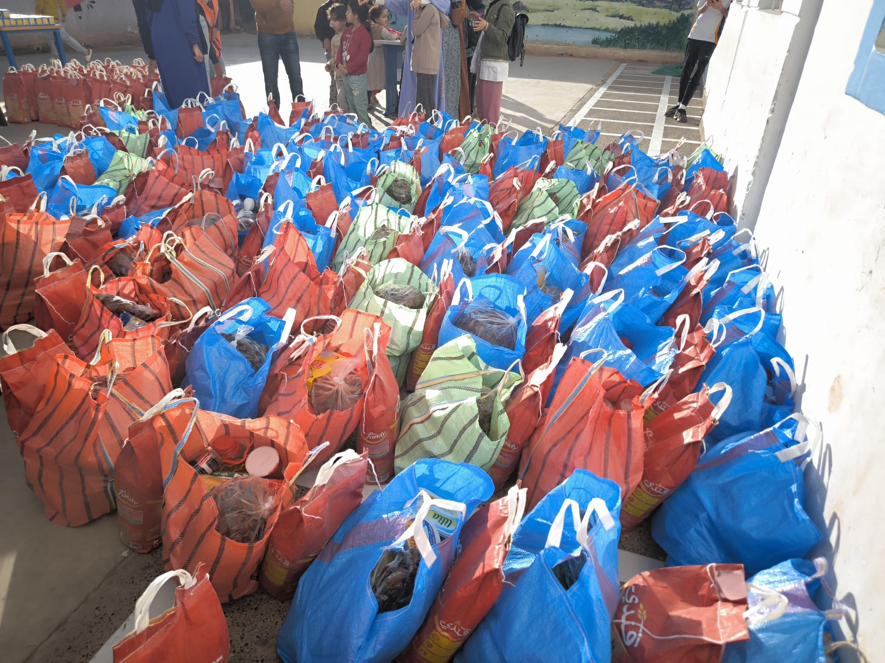
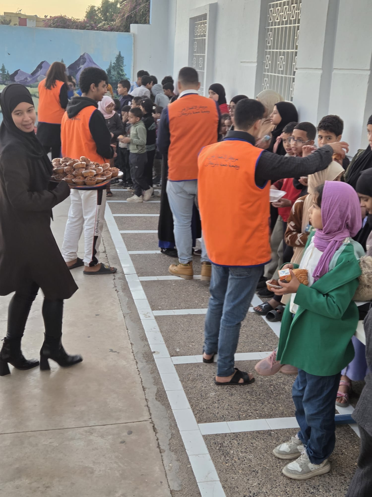
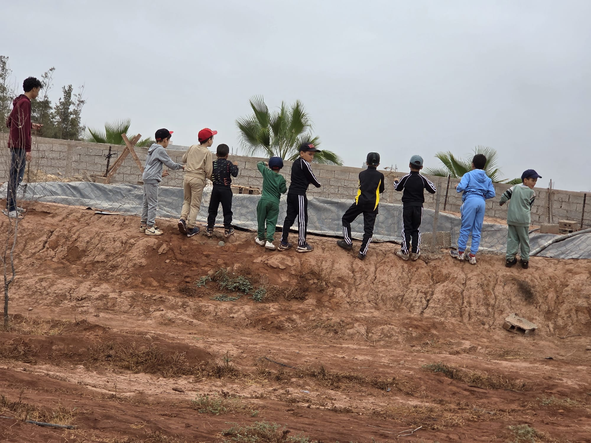
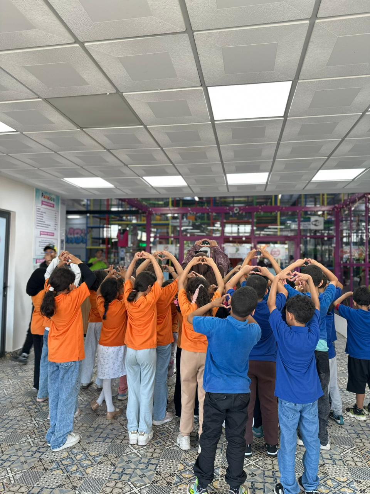
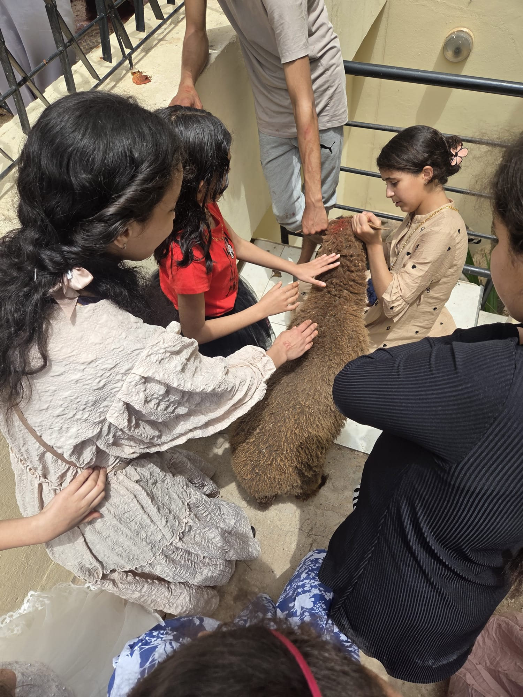
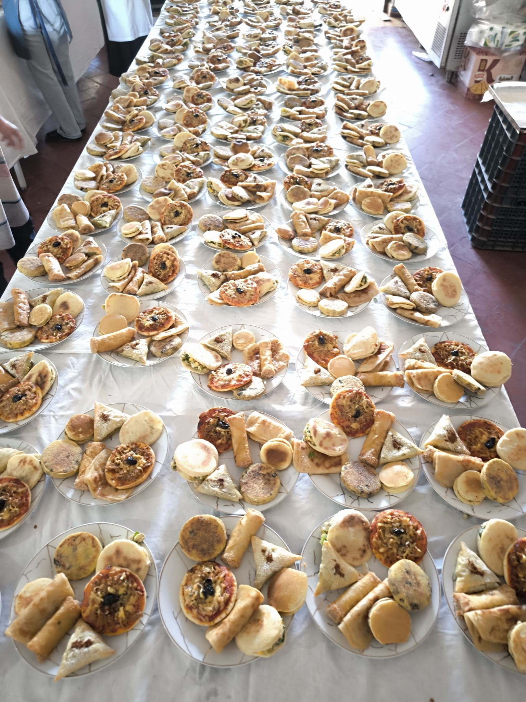

Les Ailes de l'Entraide est une association solidaire qui agit chaque jour pour apporter éducation, soins, soutien et sourires aux enfants orphelins et aux personnes en situation difficile.

Qui sommes-nous
Depuis notre création, nous accompagnons les orphelins, les veuves et les familles démunies en leur offrant un soutien matériel, éducatif et psychologique adapté à leurs besoins.
Grâce à l'engagement de nos bénévoles et à la générosité de nos donateurs, nous menons des actions concrètes : parrainage scolaire, distribution alimentaire, accès aux soins et accompagnement social.
Nos domaines d'action
Nos actions s'articulent autour de quatre piliers essentiels pour offrir un avenir digne à chaque personne que nous accompagnons.
Parrainage scolaire, fournitures et soutien pédagogique pour les enfants orphelins.
Accès aux soins médicaux, suivi sanitaire et campagnes de sensibilisation.
Distribution de paniers alimentaires aux familles les plus vulnérables.
Accompagnement psychologique et aide à l'insertion sociale durable.
Sur le terrain
Découvrez l'ensemble des programmes que nous menons tout au long de l'année pour améliorer le quotidien des orphelins et des familles en difficulté.
Ce programme permet à des dizaines d'enfants orphelins de poursuivre leur scolarité grâce au soutien régulier de parrains et marraines.

Enfants en classe bénéficiant du programme de parrainage scolaireChaque mois, nos équipes distribuent des paniers alimentaires aux familles les plus démunies, en particulier durant les périodes les plus difficiles de l'année.

Paniers alimentaires prêts à être distribués aux familles dans le besoinLes Ailes de l'Entraide œuvre chaque jour pour venir en aide aux personnes les plus vulnérables, en plaçant l'humain, la bienveillance et la solidarité au cœur de chacune de ses actions.
Grâce à la générosité de nos donateurs, nous apportons un soutien concret aux orphelins, aux veuves, aux personnes en situation de handicap ainsi qu'aux familles en grande précarité.
Notre mission est simple : redonner de l'espoir, semer le sourire et faire du bien, uniquement pour la satisfaction d'Allah.
Parce qu'un simple geste de générosité peut transformer une vie.

Médecin bénévole lors d'une consultation gratuite en caravane médicaleChez Les Ailes de l'Entraide, notre engagement ne s'arrête pas à leurs 18 ans. Être majeur ne signifie pas ne plus avoir besoin d'aide. C'est souvent le début des plus grands défis : construire son avenir sans le soutien de ses parents.
Notre mission est de continuer à marcher à leurs côtés en leur apportant écoute, accompagnement, soutien moral, administratif et, selon les besoins, une aide matérielle pour qu'ils puissent avancer avec dignité et espoir.
Parce qu'à 18 ans, un orphelin ne cesse pas d'être orphelin… Il a simplement encore plus besoin d'une main tendue.

Accompagnement psychosocial d'une famille par un bénévole de l'associationTout au long de l'année, nous organisons des journées dédiées aux enfants : sorties, ateliers créatifs et moments de partage pour leur offrir des souvenirs heureux.

Enfants formant des cœurs avec leurs mains lors d'une journée de solidaritéGalerie
Un aperçu visuel de nos interventions sur le terrain.


Votre don ou votre engagement bénévole nous permet de poursuivre et d'étendre ces programmes essentiels.
Nos chiffres
Agir ensemble
Chaque geste compte. Voici comment vous pouvez faire la différence dans la vie de nos enfants.
Votre contribution financière, petite ou grande, permet de financer hébergement, scolarité et soins médicaux.
Je fais un donOffrez votre temps et vos compétences. Enseignants, médecins, animateurs — toutes les vocations sont bienvenues.
Je m'engageVêtements, jouets, livres, matériel scolaire ou alimentaire — chaque don en nature fait une vraie différence.
En savoir plusParlez de nous autour de vous, partagez nos publications sur les réseaux. La visibilité sauve des vies.
Nous contacter
Vous avez des questions, souhaitez faire un don ou devenir bénévole ? Contactez-nous directement via l'un de nos canaux. Nous répondons dans les 24h.